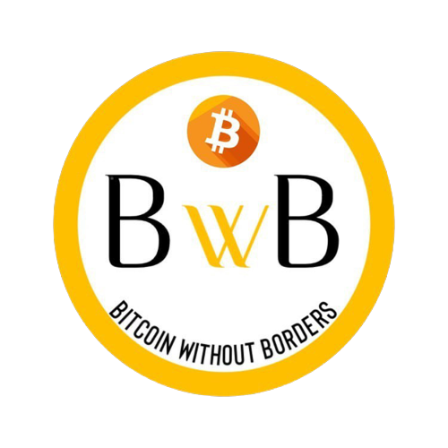
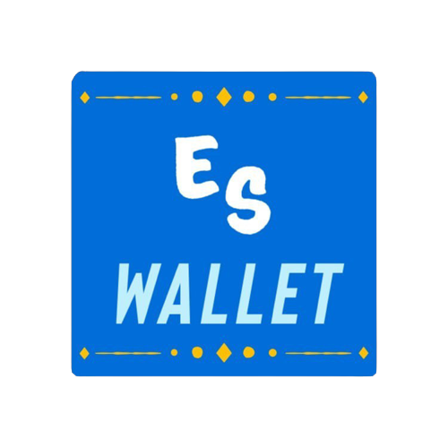

BwB (Bitcoin without Borders) es una organización, la cual tiene como objetivo mejorar la actual situación del bitcoin en El Salvador con la implementación de técnicas que ayuden a una mejor percepción de la criptomoneda y su respectivo manejo en los distintos factores tanto a favor como en contra en implementaciones de las finanzas de cada persona u organización.  La compañía busca dar conciencia a la población salvadoreña del tema del bitcoin, sus pros y contras, el uso correcto del mismo, cómo manejarlo, entre otras. Cabe recalcar, que toda esa información, además de encontrarse en la página web de la compañía, será también brindada en una nueva aplicación, la cual funciona como una wallet donde la población podrá hacer manejo del bitcoin. El nombre de la antes dicha aplicación es ES-Wallet, esta busca que los salvadoreños aprendan más sobre el tema del bitcoin y todo lo demás mencionado, siendo de la misma manera una fuente donde se pueda manejar la criptomoneda, en pocas palabras, ES-Wallet busca el conocimiento, la motivación y un centro de manejo del Bitcoin en El Salvador. Para que el bitcoin tenga un cambio en su situación, se tiene que brindar lo que los salvadoreños no tuvieron de primera instancia, la cual fue conocimiento y una fuente que lo brindara respecto al tema, la población no se educó para un manejo uniforme de la criptomoneda. La estrategia de "Chivo Wallet" incentivó solo en su momento, con la técnica de los $30 dólares se llamó la atención de los individuos, pero sin un previo conocimiento de este, sólo se retiró el dinero y dejaron la aplicación. BwB busca no cometer ese desliz, y que las personas confíen en esta nueva moneda legal del país teniendo un conocimiento previo y tengan la incentivación de emplearla.
El sistema empleado en ES-Wallet se basa en un campo que mantiene un registro constante de los movimientos del bitcoin en el país, este registro queda en un historial, el cual todos pueden tener acceso para verlo, sin embargo, este no se puede editar de ningunas manera. El sistema de seguridad empleado da un rastreo a cada cuenta de ES-Wallet, el hackeo de ese sistema no es posible, dado a que ese rastreo es grabado en innumerables computadoras, como un historial.  En los casos de errores de transacción o intento de estafas, nuestro servicio central desarrolló un manejo inteligente que detecta todo movimiento extraño, al darse el caso, se le preguntará al individuo si ha sufrido cierto inconveniente, para poder contactar y seguir el registro del usuario que comete la falta o tuvo la transacción por error. Si este usuario no devuelve lo entregado por error, o se tiene la evidencia de su estafa, este no podrá volver a ingresar a la plataforma, su DUI (este siendo un requisito para entrar), será eliminado y bloqueado de esta aplicación. La aplicación es gratis, esta disponible para Android y iOS; ES-Wallet busca algo diferente, quiere garantizar la mejora y lo mejor para el pueblo salvadoreño.
"NUESTRAS TÉCNICAS"
La compañía busca que el pueblo salvadoreño se interese en el uso de la criptomoneda, es un avance que marcará al país, por lo que, personal de esta compañía, recorrerá los centros de los distintos departamentos, en donde se impartirán clases para conocer más del bitcoin, su uso y métodos para implementarlos en un negocio o uso personal. Las clases están abiertas para todo público, el aprender será para todos los que lo deseen. Para más información puede dirigirse al siguiente enlace.
El Bitcoin puede ser un nuevo camino para la nación, pero tenemos que conocer ese camino para experimentar en el mismo, los salvadoreños tienen la oportunidad aprender a manejar la criptomoneda; y aunque cada persona es libre de elejir el implementarla o no, esta compañía está dispuesta al servicio de todo individuo en busca del conocimiento de la criptomoneda.